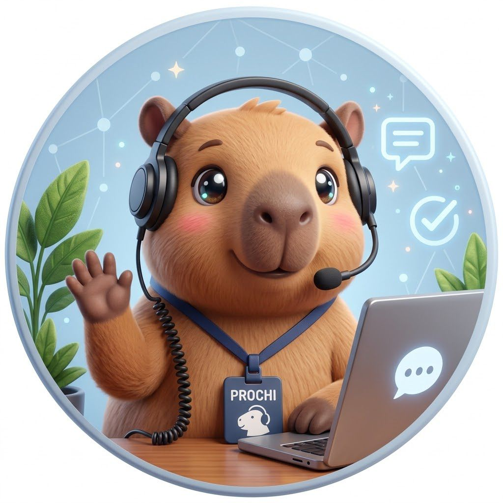

PROCHIAsistente virtual de IDEAPRO
Sin conexión
¿En qué te puedo ayudar?
Consulta sobre gestión pública, formación y tecnología, o cuéntame qué proyecto tienes en mente.
PROCHI está respondiendo…

Sin conexión
Consulta sobre gestión pública, formación y tecnología, o cuéntame qué proyecto tienes en mente.